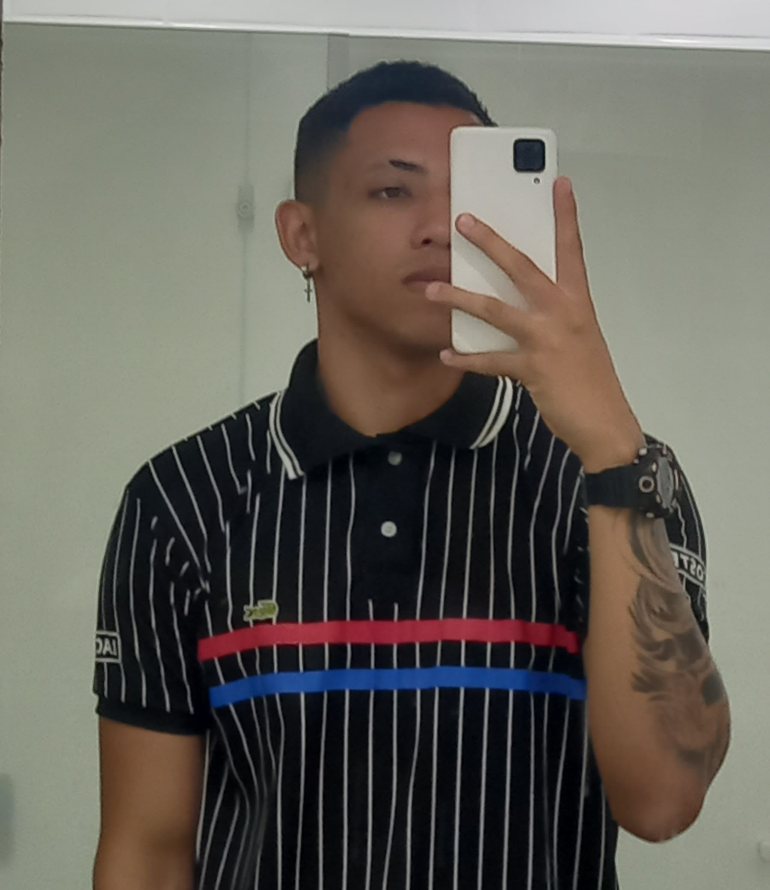

Bem-vindo à minha landing page!
Quem sou eu
Me chamo Renan Santos Calazans, tenho 21 anos. Nasci e cresci na cidade de Vila Velha-ES.
Habilidades
Sou uma pessoa calma e tranquila para lidar com as pessoas, sou paciente e sei lidar com as diferenças. Agora no campo das hardskills, Sou iniciante na área da computação, mas já tenho habilidade com digitação, conhecimentos básicos em python, Css, Html e Java script. Também possuo conhecimentos básicos sobre banco de dados, Experiência do usuário e Design de games
Hobbies
Sou bem eclético em relação aos meus Hobbies, em casa gosto de ver séries, filmes, animes e jogar principalmente se o jogo for da franquia Pokemon hahaha. quando saio gosto muito de ir à praia, principalmente se for pela noite. Também gosto de ir ao shopping, cinema e sair para comer. Antigamente gostava de tocar teclado, porém meu teclado quebrou, sendo assim não consigo mais treinar. Quando possuo tempo livre também faço musculação.

Vida Acadêmica
No meu ensino fundamental, estudei na escola UMEF Dr. Tuffy Nader. Já no ensino médio cursei na EEEFM Benício Gonçalves. Iniciei, minha carreira universitária na UFES, onde fiz um período de engenharia civíl, não gostei muito do curso me identifiquei mais com os conceitos básicos de programação e as matérias que envolvem matemática, que são ágebra linear e cálculo I. Por isso hoje acredito que me identifico com o curso de ciências da computação que curso na Universidade de Vila Velha.
Objetivos Futuros
Pretendo seguir na faculdade e depois de um tempo começar a atuar na área para obter experiência, e depois seguir na área acadêmica me tornando professor ou desenvolvendo pesquisas.